OMS · WMS Portfolio · 2025.08 – 2026.07
Spring Boot·JPA를 익히려 만든 작은 커머스 앱에서 시작했습니다. 그런데 만들수록 ERP 웹 개발로 다뤄온 주문·재고 도메인이 겹쳐 보였고, 기능을 늘리는 대신 실무에서 겪던 문제를 처음부터 직접 설계해보는 쪽으로 방향을 바꿨습니다.
방향을 가른 것은 “재고가 없어도 주문을 받는다(백오더)”는 정책이었습니다. 이 하나를 넣자 주문과 재고의 관심사가 충돌했고, 결국 주문(OMS)과 창고(WMS)를 별개 애플리케이션·별개 DB로 분리한 뒤 그 사이의 정합성을 어떻게 보장할 것인가가 프로젝트의 본론이 되었습니다.
기능을 더하다 만난 구조적 충돌
처음 목표는 Spring Boot와 JPA를 손에 익히는 것이었습니다. 그래서 상품·장바구니·주문이 있는 작은 커머스 앱을 만들었고, 거기까지는 흔한 학습용 CRUD였습니다.
방향이 바뀐 것은 “그럼 재고가 없으면 어떻게 되지?”라는 질문에서였습니다. 실무에서 다루던 도메인이라 답이 먼저 보였습니다 — 유통 현장에서는 재고가 없다고 주문을 막지 않습니다. 입고 대기(백오더)로 받아둔 뒤 입고 순서대로 충족시키죠. 이 정책 하나를 넣자 주문 시스템이 창고의 일을 하기 시작했습니다: 발주를 넣고, 입고를 기록하고, 언제 물건이 들어오는지 관리해야 했으니까요. 학습용 CRUD로 끝낼 게 아니라, 도메인 지식을 넣어 제대로 설계해보자고 방향을 정한 지점입니다.
ERP에서 주문 모듈과 재고 모듈이 한 DB를 공유할 때 생기는 문제는 실무에서 겪어온 것이었습니다. 재고 수량이 여러 화면·여러 트랜잭션에서 수정되면서 “지금 이 숫자를 누가 바꿨는지” 추적이 어려워지고, 한쪽 요구사항 변경이 다른 쪽을 건드리는 상황이 반복됩니다. 그래서 이번에는 편의를 포기하더라도 경계를 물리적으로 나누고, 그 대가(네트워크 실패·지연)를 설계로 감당해보기로 했습니다.
| 단계 | 한 일 | 상태 |
|---|---|---|
| Phase 1 | 주문 정책 전환 — 예약/백오더 모델 도입(모놀리스 내부) | 완료 |
| Phase 2 | 모듈 경계 분리 — contract 포트로만 통신, 패키지 순환 제거 | 완료 |
| Phase 3 | WMS 물리 분리 — 별도 앱·별도 DB·REST 통신 | 완료 |
둘로 나누면 “재고가 몇 개인가”라는 질문에 답이 두 개 생길 위험이 따라옵니다. 이 프로젝트의 모든 설계 결정은 이 위험을 없애는 방향으로 내려졌습니다.
경계를 긋고, 그 경계를 계약으로만 넘나들게 했습니다
두 서비스는 서로의 DB를 알지 못하고, 4개의 REST 채널로만 통신합니다. S1~S4는 저장소 문서에서 쓰는 채널 번호입니다.
| OMS (주문) | WMS (창고) | |
|---|---|---|
| 소유 도메인 | 주문·장바구니·고객·판매, 백오더 | 재고 수량·예약·발주·입고·재고 원장 |
| 재고에 대해 | REST API로 조회 + “보충해줘” 요청 | 재고 정본. 조정·발주·입고·요청 승인 |
| 관리자 권한 | 재고 조정·발주·입고 없음(설계상 제거) | 위 전부 소유 (OPERATOR / MANAGER) |
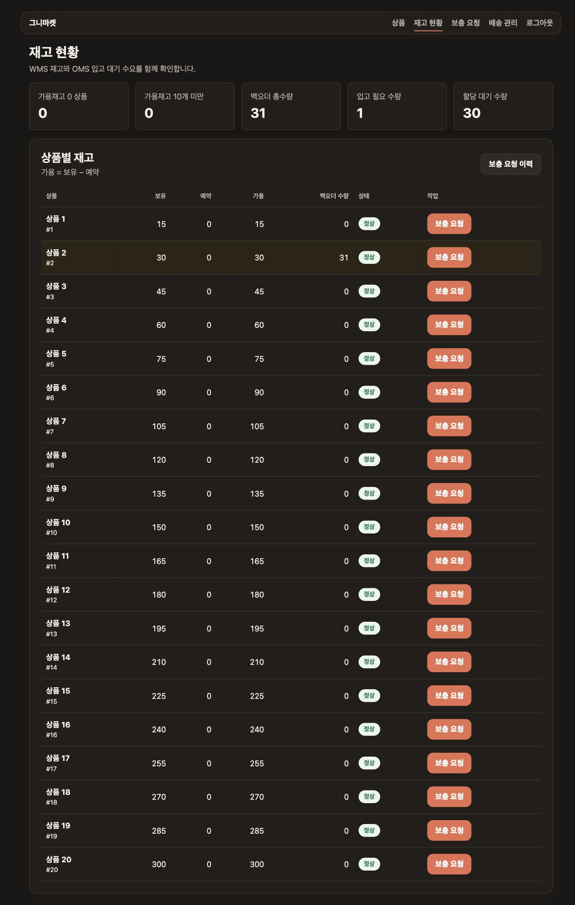
백오더 총수량 31 = 입고 필요 1 + 할당 대기 30.
OMS 관리자에게 보충 요청 버튼만 있고 재고 조정 버튼이 없는 것도 의도된 설계입니다.
“왜 그렇게 했는가”가 이 프로젝트에서 가장 중요한 부분입니다
두 DB가 각자 재고를 가지면 동기화가 필요하고, 동기화는 반드시 어긋납니다.
OMS는 재고 수량을 저장하지 않습니다. 필요할 때마다 WMS의 REST API를 호출해 조회하고, 예약·출고·해제 같은 차감도 전부 API 호출로만 합니다. 사본이 없으므로 “어긋난 재고”라는 버그 자체가 존재할 수 없습니다. 미러링이 아니라 라이브 리드입니다.
재고 5개에 동시 주문 10건이 들어오면 다 팔아버리는(오버셀) 문제.
주문 접수 시점에 예약을 잡고, 실물은 출고 시점에 빠집니다. 그 사이 상태(“팔렸지만 아직 안 나간 물건”)를 시스템이 표현할 수 있게 됩니다.
예약은 orderId UNIQUE로 멱등이라 재시도해도 이중 차감되지 않고, 전부-아니면-실패(원자적)로 처리해 부분 예약이 남지 않습니다.
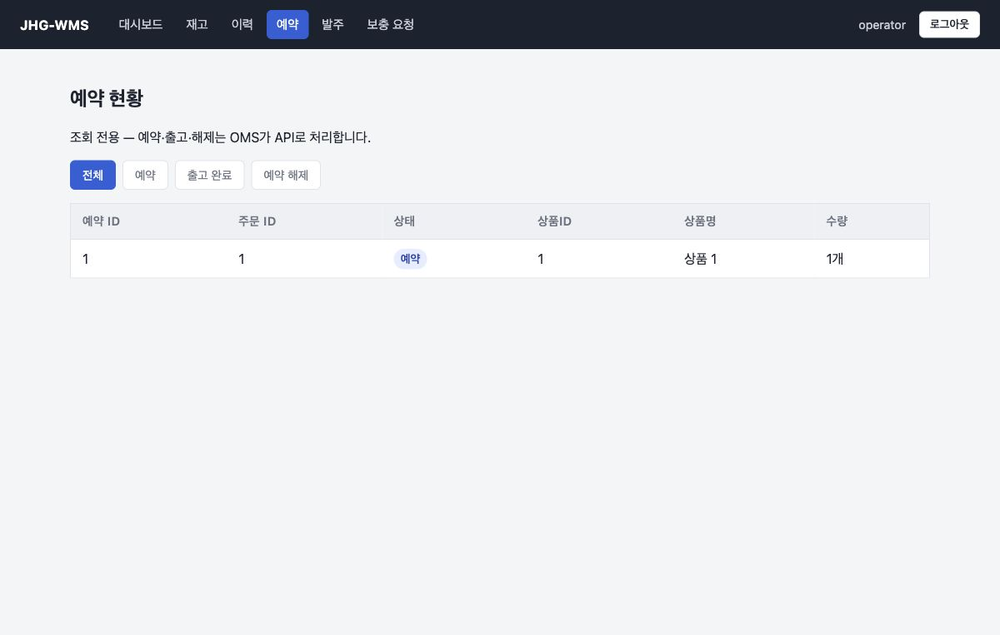
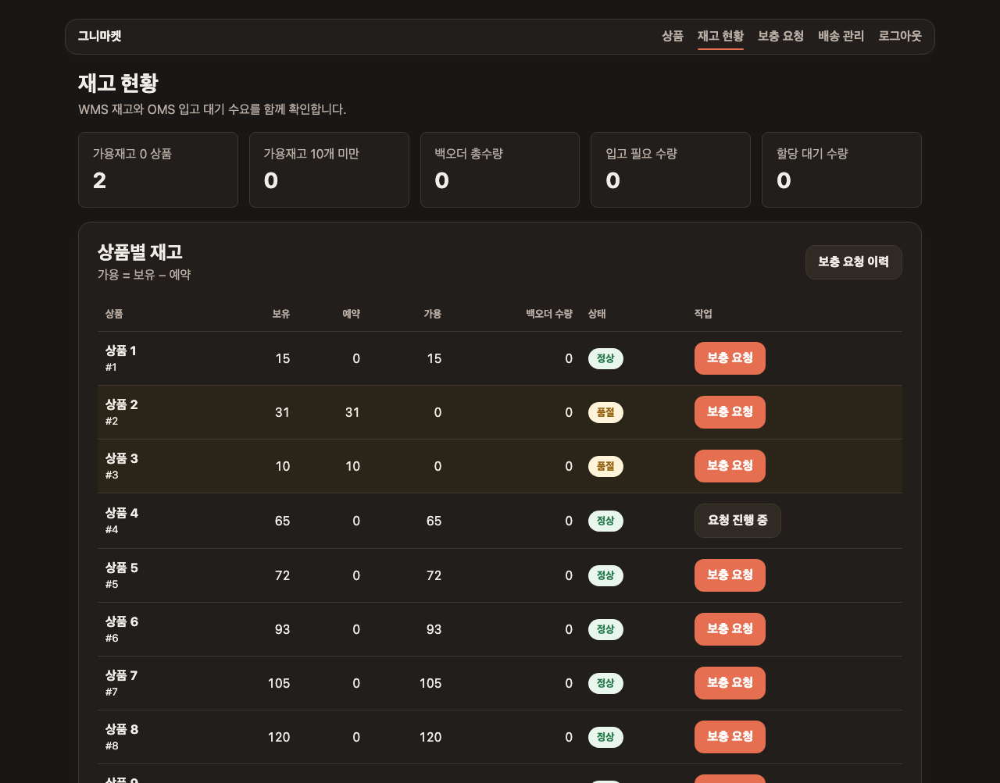
가용 = 보유 − 예약으로 드러납니다.
상품 2·3은 보유는 있지만 전량 예약돼 가용이 0이라 품절로 표시됩니다 —
“물건은 창고에 있지만 이미 팔린” 상태를 재고 수량 하나로는 표현할 수 없습니다.
“이 수량이 왜 이렇게 됐지?”에 답할 수 없으면 재고 시스템을 신뢰할 수 없습니다.
입고·출고·조정·초기 시드가 전부 한 지점(InventoryService.applyDelta)을 통과하도록 만들어, 원장 누락이 구조적으로 불가능하게 했습니다.
각 행은 변동량·변경 전/후 수량·참조(발주 #N, 주문 #N)를 남깁니다.
불변식은 상품별 원장 delta 합 == 현재 보유수량이며, 테스트로 검증합니다.
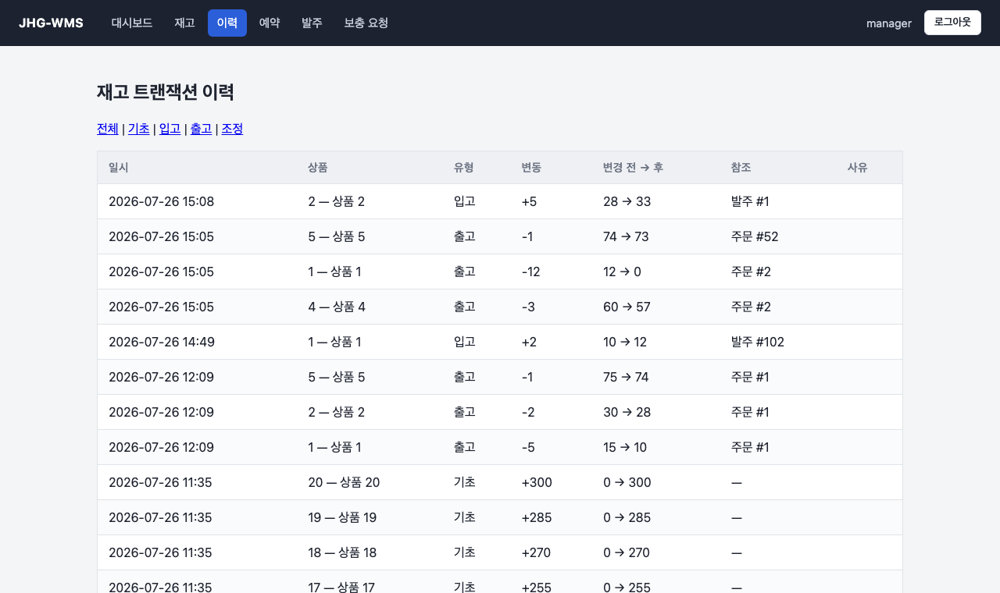
재고 없는 주문이 접수되고, 창고가 채우고, 자동으로 충족되기까지
고객 화면의 재고 수치는 OMS가 저장한 값이 아니라 화면을 그릴 때마다 WMS의 REST API를 호출해 받아온 가용 수량입니다. 가용 범위 안의 주문은 재고 확보 상태가 되고, 그 순간 WMS에 예약이 걸립니다 — 보유 수량은 그대로인 채 가용만 줄어듭니다.
출고 전에 취소하면 예약이 해제되어 가용 수량이 복구됩니다. 실물은 애초에 창고를 떠나지 않았으므로 보유 수량은 변하지 않습니다. 이 “예약과 실물의 분리”가 이후 백오더·부분 입고·출고를 모두 지탱하는 토대입니다.
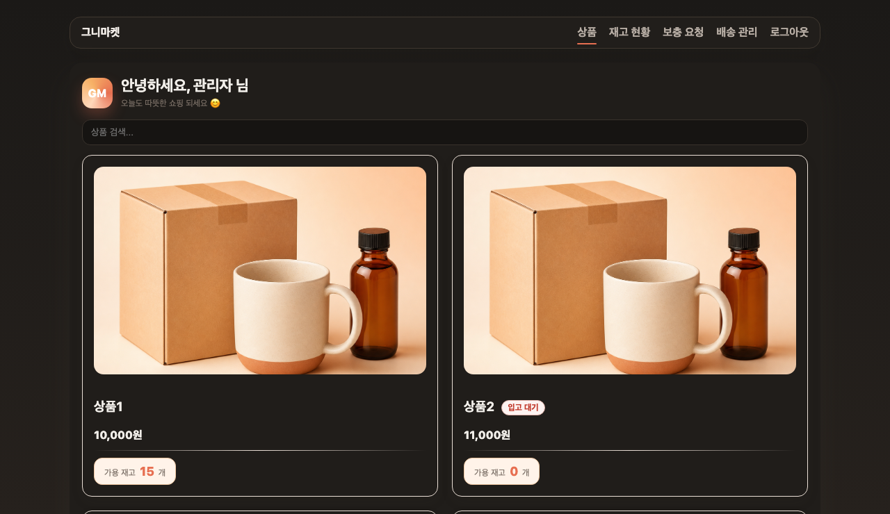
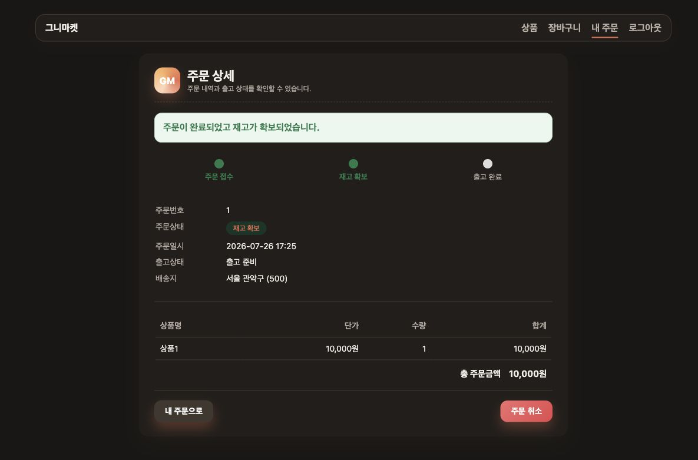
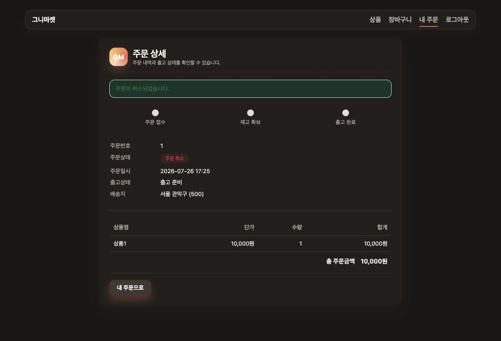
가용 수량을 넘는 주문은 거절하지 않고 입고 대기로 받습니다. 이때 예약은 잡히지 않습니다 — 없는 재고를 예약할 수는 없으니까요.
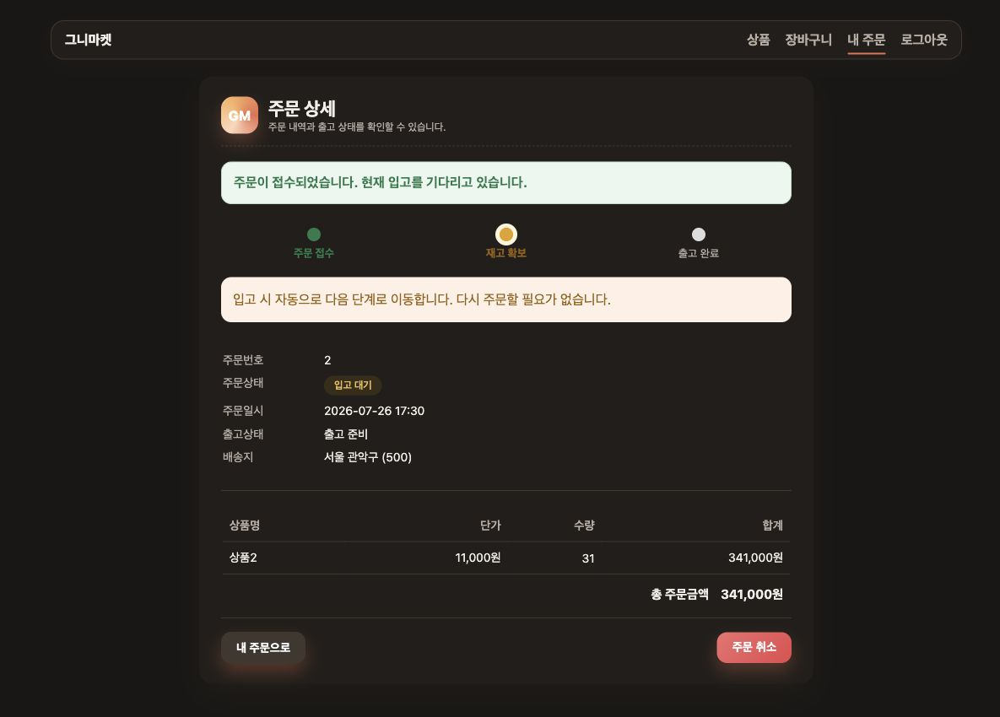
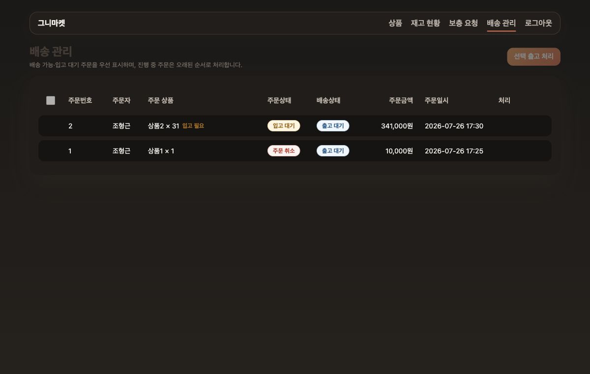
OMS는 요청만 합니다. 발주를 낼지 말지는 창고의 판단이므로 WMS 관리자(MANAGER)가 승인하고, 승인 시 발주가 자동 생성됩니다. 요청은 requestKey로 멱등 처리돼 중복 전송에도 안전합니다.
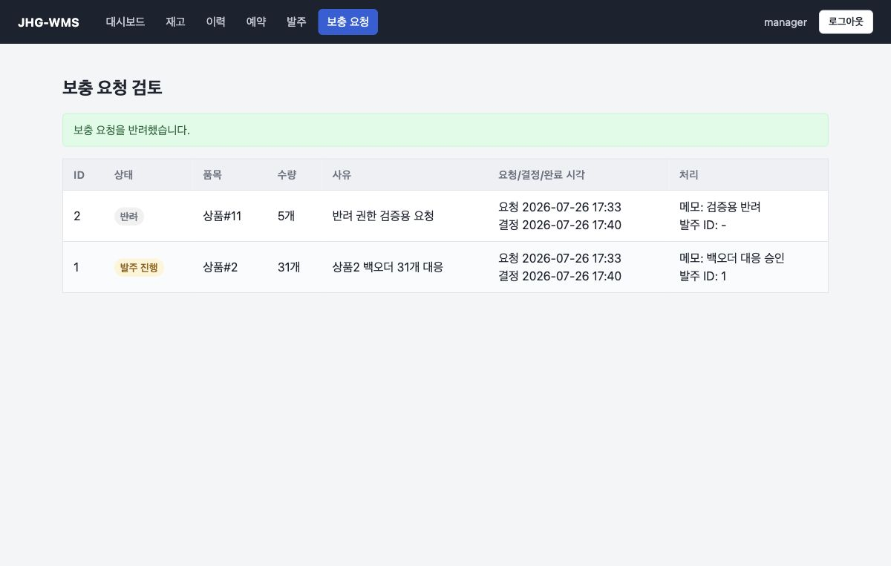
한 발주를 여러 번에 나눠 입고합니다. 품목별로 누적 입고량과 잔량을 추적하고, 모든 품목의 잔량이 0이 되어야 입고 완료로 넘어갑니다.
연결된 보충 요청은 전량 입고 시점에만 “이행 완료”가 됩니다. 부분 입고에서 이행 신호를 보내면 “요청한 물량을 다 채웠다”는 거짓 신호가 되기 때문입니다.
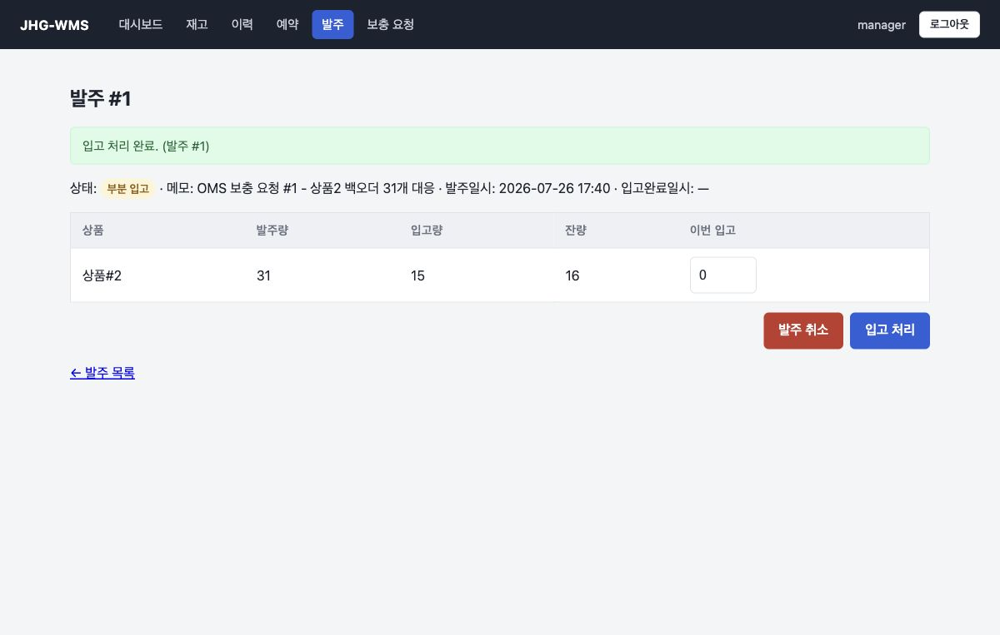
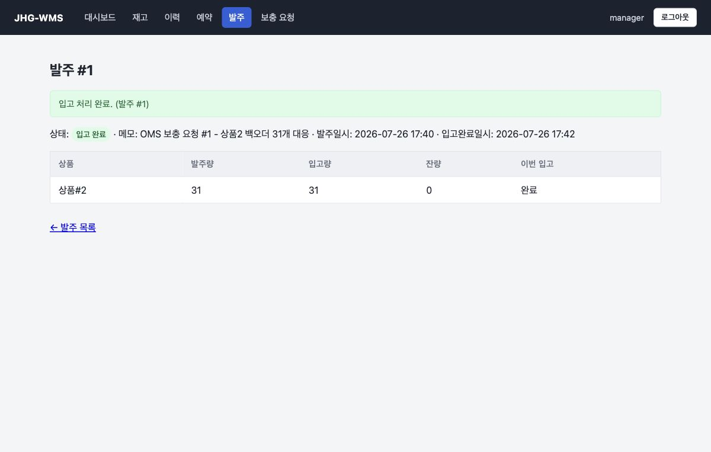
입고로 재고가 증가하면 WMS가 트랜잭션 커밋 후 OMS에 통지하고, OMS는 밀려 있던 주문을 먼저 주문한 순서(FIFO)로 승격시킵니다.
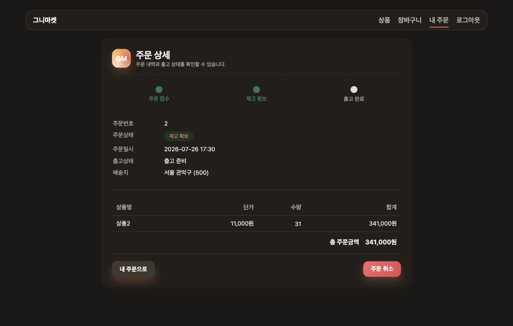
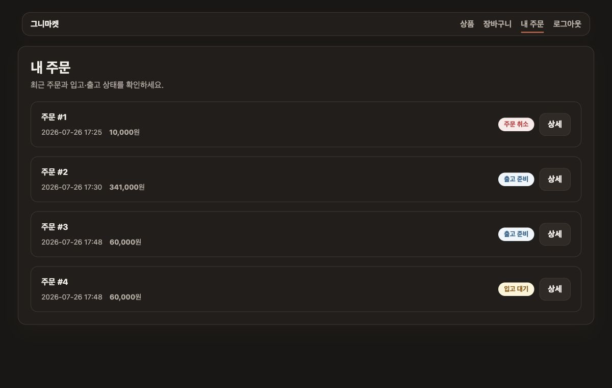
부분 입고는 “공급처가 잔량을 안 보내는” 상태를 만들 수 있습니다. 그대로 두면 발주가 부분 입고에 갇히고 연결된 요청도 종결되지 못합니다. MANAGER가 취소하면 발주와 요청이 한 트랜잭션에서 함께 닫힙니다.
이미 입고된 수량은 되돌리지 않습니다 — 실물이 창고에 들어왔기 때문입니다. 재고와 원장 모두 그대로 유지되고, 취소로 인한 새 원장 행도 생기지 않습니다.
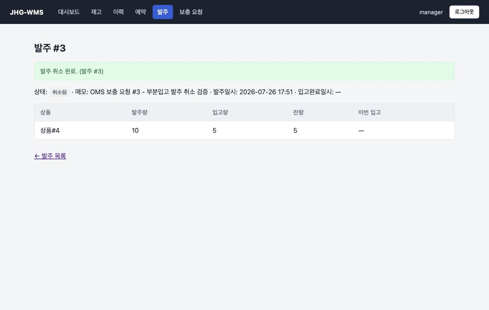
출고 시점에 보유·예약 수량이 동시에 차감됩니다. 그래서 가용 수량은 출고 전후로 변하지 않습니다(이미 예약으로 빠져 있었으므로). 원장에는 주문 #N 참조와 함께 출고 행이 남습니다.
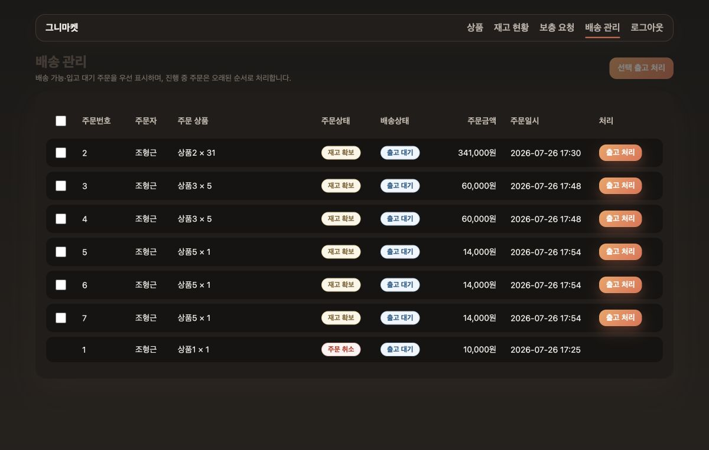
두 시스템으로 나눈 이상, 상대가 응답하지 않는 순간은 반드시 옵니다
통신은 실패해도 되지만, 재고 데이터는 틀리면 안 된다. 장애를 예외가 아니라 정상 경로의 일부로 두고 설계했습니다.
| 실패 상황 | 설계 대응 | 결과 |
|---|---|---|
| OMS가 죽은 채 입고 발생 | 통지는 best-effort — 실패해도 입고·원장은 커밋 | 재고 무손실. 복구 후 보상 스윕이 누락 승격 회수 |
| WMS가 죽은 채 주문 유입 | OMS가 가용수량을 0으로 폴백 | 주문은 실패하지 않고 백오더로 접수 — 없는 재고를 팔지 않음 |
| 상대가 응답 없이 매달림 | 타임아웃 (connect 1s / read 2s) | 스레드가 묶이지 않고 수 초 내 복귀 |
| 타임아웃이 만든 반쪽 상태 | 해제된 예약의 출고, 출고된 예약의 해제를 거부 | 예약 수량 음수 같은 재고 오염 차단 |
| 중복 요청·재시도 | 예약은 orderId, 보충 요청은 requestKey로 멱등 | 재시도해도 수량이 두 번 반영되지 않음 |
| 자격증명 오설정 | 운영 프로파일은 기본값 없음 — 누락 시 기동 실패 | 운영에서 기본 계정으로 조용히 뜨는 사고 차단 |
두 서비스를 실제로 띄우고, 지키고, 늘려본 경험
ddl-auto: validate로 엔티티-스키마 불일치를 기동 시 감지단일 인스턴스를 3개로 늘리자 애플리케이션이 들고 있던 상태 두 가지가 곧바로 문제가 됐습니다.
| 병목 | 원인 | 해결 |
|---|---|---|
| 세션 기반 CSRF | CSRF 토큰이 인스턴스별 세션 메모리에 저장 → 다른 인스턴스로 라우팅되면 폼 제출 403 | Redis 공유 세션 — 보안 설정은 그대로 두고 세션 저장소만 밖으로 |
| 초기화 경합 | 다중 인스턴스 동시 기동 시 시드 데이터가 중복 삽입돼 UNIQUE 충돌 | Redisson 분산 락 — 락을 잡은 1개 인스턴스만 시딩 |
Nginx로 3개 인스턴스에 분산하고, 응답 헤더(X-Served-By)로 실제 분산 동작을 확인했습니다.
두 기능은 프로파일로 게이팅해 단일 인스턴스 배포에서는 Redis 없이 그대로 동작합니다.
@DataJpaTest) / MockMvc 슬라이스 / 실서블릿 보안 통합설계 문서에 적히지 않는, 실제로 부딪힌 지점들
증상 — WMS가 OMS로 보내는 콜백에 인증을 붙였는데, 자격증명이 틀려도 호출이 조용히 넘어갔습니다. 재고는 늘었는데 주문 승격이 안 되는, 원인을 알기 어려운 상태였습니다.
원인 — 인증 실패 시 서버가 401을 내면 서블릿이 이를 /error로 재디스패치하는데, 그 경로가 폼 로그인 체인에 걸려 302(로그인 페이지 리다이렉트)로 응답됐습니다. 302는 4xx/5xx가 아니라 HTTP 클라이언트가 예외를 던지지 않았고, 그래서 실패가 감지되지 않았습니다.
해결 — API 체인이 인증 실패 시 401을 직접 응답하도록 진입점을 지정했습니다. 더 중요한 건 테스트가 이 버그를 못 잡고 있었다는 점입니다. MockMvc는 서블릿의 /error 재디스패치를 재현하지 않아 통과하고 있었기에, 실제 서블릿 컨테이너를 띄우는 통합 테스트로 “미인증 API는 401이며 리다이렉트가 아니다”를 고정했습니다.
테스트가 초록불이라는 사실보다 그 테스트가 무엇을 재현하지 못하는지가 중요합니다. 경계(서블릿·필터·네트워크)를 넘는 동작은 그 경계를 실제로 통과시키는 테스트로만 고정할 수 있습니다.
증상 — 발주 취소 기능을 TDD로 만들었는데, 취소된 발주에 입고를 실행하면 재고가 늘고 상태가 되돌아가 취소가 무효화됐습니다.
원인 — 입고 가드가 “이미 입고 완료된 발주”만 막고 “취소된 발주”를 빠뜨렸습니다. 취소 기능을 만들 때 “완료된 발주는 취소 불가”는 테스트했지만, 역방향인 “취소된 발주는 입고 불가”는 아무도 테스트하지 않았습니다.
발견 경위 — 코드 리뷰도 자동 테스트도 잡지 못했고, 수동 검증 시나리오를 작성하다가 “취소 후에 입고를 시도하면?”이라는 질문에서 드러났습니다.
상태 전이는 양방향으로 막아야 합니다. 그리고 검증 시나리오를 문서로 먼저 적는 절차를 넣었습니다 — 코드가 답하지 못하는 질문은 대개 시나리오를 쓰다가 드러납니다.
증상 — 부분 입고를 도입하자 새로운 문제가 생겼습니다. 공급처가 잔량을 보내지 않으면 발주가 “부분 입고”에 영원히 머물고, 연결된 보충 요청도 종결되지 못했습니다.
해결 — 기능을 “동작하게” 만드는 것과 생애주기를 닫는 것은 다르다는 것을 인정하고, 취소 경로를 추가했습니다. 이때도 이미 입고된 실물 수량은 되돌리지 않는다는 도메인 규칙을 지켰습니다 — 물건은 이미 창고에 있으니까요.
새 상태를 도입할 때는 그 상태에서 나가는 길까지 한 묶음으로 설계합니다. ERP에서 “미결 전표”가 몇 년씩 쌓이는 것과 같은 문제로, 뒤늦게 닫으려면 이미 데이터가 쌓여 있습니다.
지금 만들지 않기로 한 것과, 언제 만들 것인가
기능을 더 넣는 것보다 지금 필요한 범위를 정하는 것이 더 어려웠습니다. 아래는 의도적으로 미룬 항목과 그 판단 근거입니다.
| 항목 | 왜 지금 하지 않았나 | 착수 조건 |
|---|---|---|
| 재고 실사 Cycle Count |
수동 조정이 이미 같은 역할을 하고, 원장에 근거가 남는다 | 실물과 장부를 주기적으로 맞추는 프로세스가 필요해질 때 |
| 반품 / RMA | 현재 예약 해제는 있으나 반품 재입고 경로는 없음 — 판매 흐름 완결이 우선이었다 | 반품이 실제 업무 흐름에 들어올 때 (RETURN 원장으로 확장) |
| 안전재고 · 재주문점 | 보충이 OMS 주도로도 충분히 동작하고, 자동 발주는 운영 정책 없이는 위험하다 | 재고 소진 패턴 데이터가 쌓여 임계값을 근거 있게 정할 수 있을 때 |
| 위치 / 다중 창고 대공사 |
재고를 (상품, 위치)로 분해하면 모델 재설계 — 프로젝트 규모가 2배가 된다 |
“물건이 창고 어디에 있는가”가 실제 요구사항이 될 때 |
| 메시지 기반 통신 | best-effort 콜백 + 보상 스윕으로 데이터 정합성은 이미 보장된다. 브로커는 운영 부담을 늘린다 | 승격 지연이 실제 문제가 되거나, 이벤트 소비자가 늘어날 때 (outbox 패턴) |
“없으면 시스템이 틀린 답을 내는가”를 우선 채웠습니다. 원장·예약·부분 입고·발주 취소가 그랬고, 실사·위치·자동 발주는 없어도 답이 틀리지 않기에 미뤘습니다.